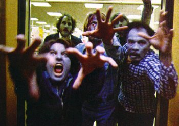

|
Everyone gets bored. And everyone has ways of dealing with their
boredom.
My friend Alek deals with his boredom by making plans for the future. I'm pretty sure he spends more time planning stuff than he actually spends doing the stuff he plans. He does this so often he can't even form a
sentence without the word "plan" in it. I make fun of him because of this. But more and more each day I realize what a good technique it is. By
planning events even later on in that same day, you can give yourself something to look forward to, and thus make the present time more tolerable. I make fun of
Alek, but he really has his shit together. Ask him what he's doing on the may 2-4 weekend, 2009... and he'll tell you.
When I'm bored, I sleep. It's that simple. I like to think of it as time travel. I set my
chronometer to alert me in 3-5 hours, and then I lay down in my time machine, and then next thing I know I'm in the future.
Another technique Alek
has for dealing with an undesirable situation, is convincing himself that he loves it. When
Alek
is working at his jobs, he constantly says "how cool it is" and "how much fun it is" to work wherever he may be working. Then he quit both and began school. Then the truth came out. "That place was a fucking hell hole".

I wish I were capable of convincing myself things. I
have too much will power. So such so that I can't not do something even if I know its going to be detrimental to me if I do.
Lately I find myself sleeping through important classes right at the end of my school year. Why? Simply because I'm sick of this school bullshit, and I'd rather not be there.
If everybody acted like me, the world would explode.
Let's all thank the lord that Alek
exists.
Josie and the Pussycats... I've seen it twice now. The first time I went to see it I had low expectations. I thought it would be one of those typical dumb movies for 13 year-old girls. But alas, it was not, and I found myself pleasantly surprised at this satire of modern marketing techniques and popular culture.
In practically every scene of the movie there is some sort of product-shot, or plug made for a product. I thought this was hilarious. The way that pop-culture and commercialism/consumerism is sensationalized and parodied made my cheeks ache from smiling so hard. This isn't just a kid's movie; it appeals to every age group.
All the characters in this movie are interesting from the diversity of the Pussycats themselves
Josie (Rachel Lee
Cook) Valerie (Rosario
Dawson), and Melody (Tara Reid) to the laughable antics of supporting characters such as the Cabot twins Alexandra (Missy Pyle) and Alexander (Paul Costanzo). My favorite characters by far were the insanely villainous characters of Fiona
(Parker Posey) and Wyatt (Allan Cummings)... their acting was perfect for the characters they were portraying, staying perfectly true to the comic feel of the movie.
The look of the movie is also appropriately comic-booky.
The music for this movie was awesome. I actually liked the punky sound of the pussycats, they kind of reminded me of a female Blink 182. As for the other music in the movie, it was very funny. The lyrics to one song in particular, DuJour's "Backdoor Lover" almost made me lose bladder control.
Overall, this movie carried the message that "It's better to be original and think for yourself than to be a slave to the trends" This got me thinking... Even though this movie carries a blatant anti-conformist message, it's still a very commercial movie. What idea is this movie trying to sell? "Being original is better" Sure, vintage clothing is better than mass-market clothing, but it also tends to be more expensive, and isn't that exactly what commercialism is all about, getting the most money out of a consumer as possible? Perhaps this movie is just a clever way of introducing originality as the trend. Or perhaps, I've out-thought myself once again.
Hollywood's devious social engineering plots aside, Josie and the Pussycats is a groovy flick.
|
|